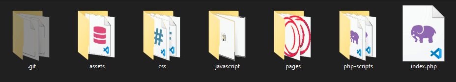

Struktura plików
Wszystkie foldery:

Foldery w folderze assets:
- 1. Folder css jest na css od czcionki Font-awesome
- 2. Folder fonts jest na pliki svg i inne również of Font-awesome
- 3. Folder img jest na zdjęcia takie jak favicon i inne
- 4. Folder prism jest przeznaczony dla biblioteki prism
- 5. Plik database.sql to cała baza danych, która zosatła użyta w tym projekcie
Pliki w folderze css
Pliki w folderze javascript
Pliki w folderze pages
Pliki w folderze php
Główny plik strony: Index.php
Założenia projektu:
Projekt ma pozwalać na rejestrację użytkownika w bazie danych z informacjami takimi jak 'email', 'nickname' oraz 'password'
Projekt ma pozwalać na logowanie użytkownika na stronie za pośrednictiwem danych, które użytkownik użył do rejestracji na stronie rejestrowania
Projekt ma stronę, na której można zobaczyć politykę prywatności strony
Projekt ma pozwalać na zmianę hasła po kliknięciu linku na stronie logowania lub w zakładce 'hasło' w stronie 'Twoje konto'
Projekt ma pozwalać na zapamiętanie użytkownika za pomocą sesji lub ciasteczka jeżeli zostało one zaznaczone
Projekt ma pozwalać na obejrzenie właśnie tej strony, którą czytasz użytkowniku
Projekt ma pozwalać na obejrzenie kodu skryptów użytych na stronie takich jak np. Logowanie użytkownika czy rejestracja
Projekt ma pozwalać na przeglądanie swoich informacji takich jak 'emial' oraz 'nickname' oraz do ich edytowania na stronie 'Twoje konto'
Projekt ma pozwalać na wylogowanie użytkownika ze strony
Projekt ma pozwalać na usunięcie konta użytkownika z bazy danych
Projekt ma pozwalać na tworzenie wpisów, edytowanie własnych i ich usunięcie
Projekt ma pozwalać na tworzenie komentarzy do wpisów, ich edytowanie oraz usuwanie
Projekt ma pozwalać użytkownikowi na wybranie czy chce widzieć najnowsze czy najstarsze wpisy
Projekt ma pozwalać na dodawanie do wpisów własnych zdjęć oraz prostych animacji, które wagą są mniejsze niż 10 megabajtów
Projekt ma pozwalać na powiększenie obrazu lub animacji z przyciemnionym tłem poprzez jej kliknięcie
Wszystkie inne rzeczy, które są możliwe do wykonania, a nie są tutaj zawarte to rzeczy nowo dodane
Co działa?
Wszystkie rzeczy, które zostały wymienione wyżej powinny działać
Błędy?
Na stronie nie ma znalezionych błędów, które mogłyby zakłócić funkcjonalność strony
Użyte narzędzia do tworzenia projektu to:
Narzędzie do edytowania: - Visual Studio Code
Pakiet wampserver do testowania strony na localhost
Czcionki oraz ikony Font-awesome
Biblioteka sweetalert
Prism syntax highlighter
Czcionki Google-Fonts 'Inter'
JavaScript Minifier do kompresowania kodu JavaScript
CSS Compressor do kompresowania kodu CSS